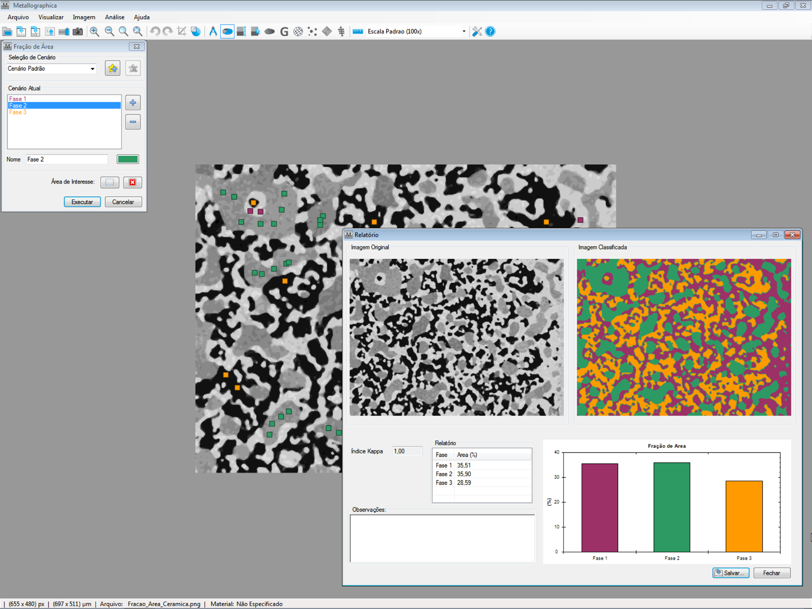

Quantificação microestrutural
Fração de área
Identifique e quantifique diferentes fases da microestrutura, com resultados percentuais organizados em relatório.
Explorar recursosAnálise microestrutural
Recursos para análise de imagens de materiais, desde a captura inicial até a obtenção de resultados quantitativos relevantes para sua indústria.

Quantificação microestrutural
Identifique e quantifique diferentes fases da microestrutura, com resultados percentuais organizados em relatório.
Explorar recursos
Análise de ferro fundido
Analise a forma, o tamanho e a distribuição da grafita com apoio de critérios de classificação.
Explorar recursos
Caracterização de grãos
Determine o tamanho de grão pelo método dos interceptos e visualize os resultados em histogramas.
Explorar recursosSIM · Soluções Inteligentes em Materiais
O Metallographica reúne ferramentas voltadas à Ciência dos Materiais e à Engenharia Metalúrgica, com uma interface simples e em português pensada para apoiar o trabalho diário no laboratório.
Conheça a SIMMetallographica
Ferramentas para explorar, medir e classificar imagens de materiais.
Entre em contato com a SIM para conversar sobre o software.
Fale com a nossa equipe